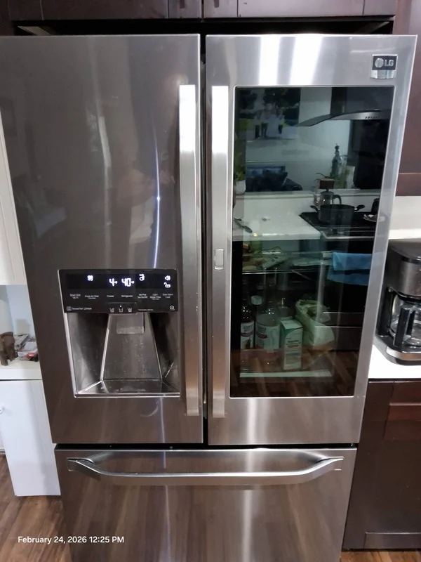
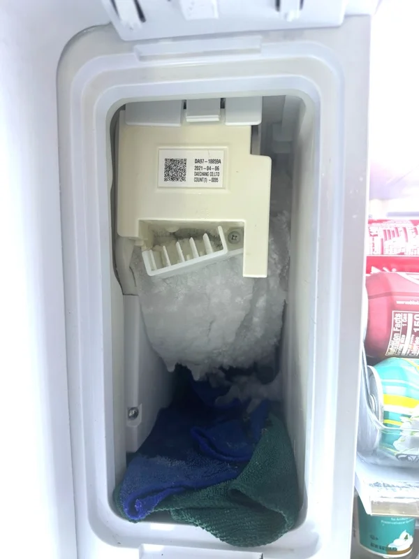

Central San Diego
San Diego Little Italy North Park Mission Valley Linda Vista Clairemont University City Carmel Valley Mira Mesa Scripps Ranch
Our services
Modern LG refrigerators combine advanced cooling technology, smart electronic systems, inverter compressors, and energy efficient components designed for long term performance. When one of these systems stops working properly, accurate diagnostics and professional repair become extremely important. Our company provides professional LG refrigerator repair services for homeowners across San Diego and nearby areas, helping customers restore proper cooling performance and prevent further appliance damage.
Our technicians repair a wide range of LG refrigerator models, including French door refrigerators, side by side units, bottom freezer refrigerators, built in refrigerator systems, smart refrigerators, and high capacity family models. Whether your appliance is leaking water, making loud noises, failing to maintain temperature, freezing food, or displaying error codes, we provide detailed diagnostics and dependable repair solutions using quality replacement parts.
Many modern LG refrigerators use advanced linear compressor technology that requires specialized troubleshooting and proper repair procedures. Compressor failures, sealed system problems, evaporator fan motor issues, control board malfunctions, and sensor failures can all affect cooling performance and lead to food spoilage if not repaired quickly. Our LG refrigerator repair service focuses on identifying the root cause of the problem instead of simply replacing parts without proper testing.

LG refrigerator compressor problems often begin with subtle warning signs before complete cooling failure occurs. Unusual humming sounds, clicking noises, inconsistent temperatures, excessive frost buildup, or warm sections inside the refrigerator compartment may indicate developing compressor or airflow issues. Early diagnosis can help prevent additional damage to the cooling system and reduce the risk of food spoilage. Professional LG refrigerator repair includes full system testing to identify both visible and hidden performance problems affecting appliance operation.
Temperature instability is one of the most common refrigerator problems homeowners experience. A refrigerator that runs constantly, cools unevenly, or stops producing ice may have airflow restrictions, failing sensors, frost buildup, damaged fans, or electronic communication problems between internal components. Professional LG refrigerator repair helps prevent recurring issues and protects the long term reliability of the appliance.

Electronic control systems play a major role in modern LG refrigerator performance. Advanced control boards, temperature sensors, defrost systems, and smart communication components work together to regulate cooling cycles and energy efficiency. When one electronic component fails, it can create multiple symptoms throughout the appliance, including cooling interruptions, display errors, fan malfunctions, or unstable freezer temperatures. Accurate diagnostics are essential for identifying the exact source of the problem and avoiding unnecessary part replacements.
We also repair common ice maker problems, water dispenser failures, leaking water lines, clogged drain systems, damaged door gaskets, broken shelves, and electronic display issues. Modern LG refrigerators contain multiple interconnected systems, and even small component failures can affect overall appliance operation. Proper diagnostics play a critical role in restoring full refrigerator performance safely and efficiently.
Regular maintenance can also help extend the lifespan of an LG refrigerator and improve overall performance. Dirty condenser coils, restricted airflow, worn door gaskets, clogged drain systems, and neglected water filters can place additional stress on internal components and reduce cooling efficiency over time. Preventive maintenance and timely repairs help protect critical refrigerator systems and support reliable long term operation for both kitchen and built in refrigerator models.
Our LG refrigerator repair service is designed to provide homeowners with professional support for both urgent refrigerator failures and ongoing performance concerns. We work carefully to diagnose appliance problems, explain repair recommendations clearly, and restore reliable cooling performance using professional repair procedures and quality replacement parts. Whether your refrigerator requires compressor diagnostics, electronic troubleshooting, or ice maker repair, our goal is to deliver dependable service focused on long term reliability and customer satisfaction.
Our goal is to provide reliable LG refrigerator repair with honest recommendations, accurate troubleshooting, responsive communication, and professional service from start to finish. We understand how important a working refrigerator is for daily life, and we focus on helping homeowners restore cooling performance as quickly as possible with dependable long term repair solutions.
In San Diego County
We proudly provide professional LG refrigerator repair services throughout San Diego County and nearby areas.
San Diego Little Italy North Park Mission Valley Linda Vista Clairemont University City Carmel Valley Mira Mesa Scripps Ranch
Oceanside Carlsbad Vista Bonsall Fallbrook San Marcos Escondido Rancho Bernardo Rancho Santa Fe Valley Center
Chula Vista Bonita Coronado National City Imperial Beach La Presa Eastlake Vistas Otay Mesa San Ysidro
Point Loma Ocean Beach Mission Beach Pacific Beach La Jolla Del Mar Solana Beach Encinitas Cardiff
Poway El Cajon La Mesa Lemon Grove Santee Spring Valley Lakeside Alpine Jamul Ramona
Your LG refrigerator may stop cooling because of a failed compressor, evaporator fan, dirty coils, faulty sensors, or sealed system issues. Professional diagnostics help find the exact cause.
Yes, we provide LG refrigerator compressor repair and diagnostics. Linear compressor problems require proper testing, sealed system knowledge, and the correct repair procedure.
Water leaks can come from a clogged defrost drain, damaged water line, faulty inlet valve, or ice maker problem. We inspect the full system to locate and repair the leak.
Yes, we repair LG refrigerator ice maker issues, including no ice production, slow ice making, frozen fill tubes, water valve failures, and control board problems.
In many cases, LG refrigerator repair is worth it if the appliance is in good condition and the repair cost is reasonable. A proper diagnosis helps you make the best decision.